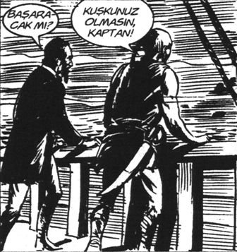

Açık kapıdan özel kalemdeki şırfıntının gevrek kahkahalarla bezediği sesi, Genel Müdür Yardımcısı’nın bekleme odasındaki sekretere ve karşısında oturan kahramanımız Hıdır Azgören’e olabildiğince net ulaşıyordu.
“Allah kadına ne diyafram verdiyse” diye düşündü Hıdır.
– Ay kız, beni genel müdür sandı. Yok şu değişirse şöyle olurmuş. Yok şöyle tasarruf sağlanırmış. Adam eğilirken bir tutuldu, bacaklar yarım metre, boy bir metre, kafa geride. Uranüslü Bayhan gibi baktı kız. Kik kik ki. Sonra devrildi. Üç müstahdem bütün hâlde karşıya taşıdılar.
– Kik kik kik. Kah kuh.
– Ay çıkarken bir de “Vakit ayırdığınız için teşekkür ederim hanımefendi” didii.
Kadınlı erkekli en az beş kişinin anırması odaya doluştu, Hıdır’ın saçını karıştırdı, kulağından kesme aldı; birkaç kahkaha ensesine şaplak attı, en son bir kıkırtı nanik yaptı ve gittiler.
Sarı boyalı saçlı, her şeyi boyalı sekreter; boya-kadın “Beyefendinin il örgütünden ziyaretçileri var. Çıkar çıkmaz sizi alcaam” dedi. Ama Hıdır’ın suratına hiç bakmadı. Hıdır kafasının hâlâ biraz geride olduğunu hissediyordu. İçinden “Beden dilini boş ver, konuşmana odaklan” diye geçirdi.
Biraz önceki rezaleti düşünürken, aklına dün gece üçte bitirdiği Sihirli Anahtar geldi.
Bu kitapta hep Amerika’dan örnekler veriyordu: “John dedi”, “James geğirdi”, “Barbara hoşt dedi” gibi. Biraz bilgeleştiler mi “Hz. İsa der ki”ye geçiyordu.
Asıl kapaktaki yazı çarpmıştı; hayır diyememişti Hıdır; “İÇİNİZDE SAKLI KAYNAKLARIN, YETENEKLERİN VE YARATICILIĞIN KAPISINI AÇAN SİHİRLİ ANAHTAR!”
Kapak “Bu kitabı almayan öküzdür” diye devam edebilirdi. Böyle bir kitabı kim almazdı ki!
Aslında içerideki bilgilerin % 90’ının diğer kitaplarla aynı olduğunu fark etti. Fakat 195. sayfadaki örnek ona tıpatıp uyuyordu.
“Dave bir grup emlak komisyoncusuna iletişim becerileri üzerine konferans vermektedir. Dinleyicilerin kıpırdandıklarını, söylediklerini dinlemediklerini fark eder. Konuşmasını zorlukla bitirir ve üç beş cılız alkış alır. Kendisini çok kötü hissetmektedir (‘İşte benim durumum’ diye düşündü Hıdır. Eve üç kuruş getireyim, hayallerim gerçekleşsin diye düştüğüm duruma bak). Yaptığı konuşmanın felaket olduğunun bilincindedir. Başarısızlığın kapanına sıkışmış, yıkılmıştır (‘Ben, işte ben’). Sonra geleceğe gider. Şimdinin kapsülünü kırar ve ileriye bakar. Tekrar konuşmacı olmak ve daha iyisini gerçekleştirmek istediğini fark eder. İnsanlarla iletişim üzerine konuşmayı çok sevmektedir.Kendi kendine, ‘Evet’ der. ‘Ne olursa olsun bunu yapmak istiyorum. Evet bu bana heyecan veriyor, bunu yapacağım!’”
Boya-kadı: Bir şey mi dediniz beyefendii?
– Yok hayır. Benim diyaframımda şey var da!
– Geçmiş olsun; metsil falan yeseydin, gazı olduğu gibi alıyo. Belki gazdan kasılmışındıır.
Boya-kad başını cık cık sağa sola salladı, bilgisayardaki fal oyununa geri döndü.
Hıdır içinden Fuji Dağı’nı Taşımak kitabını düşündü.
“İşi almak istiyorsanız, asistanıyla diyaloğu iyi kurun. Unutmayın iş görüşmesi orada başlar.”
Bunu nasıl yapacaktı peki? Bu kitapları yazan adamlar, başlarına gelen her melanetten kolayca sıyrılıyorlar, insanlarla mükemmel ilişki kuruyorlar, imgeleyip imgeleyip evleri alıyorlardı. En güzel kadınları imgeliyorlardı. Gerçek hayatta öyle kolay olmuyordu.
Asistanı nasıl kafalardı, kime danışmalıydı?
Evet Kim’e danışmalıydı.
Kim’in Motive Etmenin 1001 Yolu aklına geldi. 1001 yol! Biri olmazsa öteki.
Kitabı 13 defa okumuştu. Hanımı da motive ederiz belki diye.
107. sayfa:
“Coşkun olun. Severek, iyi niyetle bakmayı adet edinin. Etrafı hayranlıkla seyredin. İnsanları hayranlıkla inceleyin.”
Peh işte ya. Kim derdi, Kim’in yöntemi burada karşısına çıkacak. Kim’in, kime, nerede yardımcı olacağını kimse bilemezdi.
İçinden neşeyle “Kim bülüür, Kim bülüür!”
Hızla diyaframına bastırdı. Ohh kadın duymamıştı. İyi.
Önce coşku.
Nasıl yaparım, coşkulanırım. Yerinde bir kıpraştı. Hafif bir dingildedi. Boya-ka yan gözle Hıdır’a baktı.
Hıdır etrafa hayranlıkla baktı, baktı. Kadının umurunda değil.
“İnsanları hayranlıkla inceleyin.” “Şöyle hayran bakmalıyım, nasıl?” Aklına okuduğu bir beden dili kitabı geldi. Adamın Katar şeyhi gibi adı vardı, neydi neydi. Hah Ahmet Şerif İzgören. Orada okuduğu bakışı yaptı.
Başını iki enlem yatırdı, işaret parmağıyla şakağını sabitleyip gözlerini açtı ve gülümsemesini artırdı, olabilecek en sıcak bakışıyla baktı.
Boya-k biraz kıllandı, çekmecesine baktı, karıştırdı.
Hıdır gülümsemesini biraz daha artırıp kafayı iki santim daha kuzeydoğuya verdi.
Boya Hıdır’a baktı, baktı, baktı ve
– Karpuz kabuğu görmüş eşek gibi niye sırıtıyorsun? Açıkta bir şey mi gördün dümbük! dedi.
Aynı anda Genel Müdür Yardımcısı’nın kapısının gıcırdayarak açıldığını duydular...
Bu kolay bir süreç. [...] Sanki zihnin dev bir slayt gösterici ve zihnindeki her düşünce bir slaytmış gibi. Olumsuz bir slayt ekrana geldiğinde bunu olumlu bir tanesiyle değiştirmek için geçiş düğmesine bas.
“Hey, bu harika! Gerçekten pratik bir uygulama. [...] Bana Karşıt Düşünce felsefesi hakkında daha çok şey anlat.” [14]
